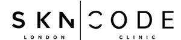

Trade Mark Journal No.2025/042 17 October 2025
UK00004268897 24 September 2025 (3,5,8,35,44)

- Class 3
- Cosmetics for use in the treatment of wrinkled skin; Cosmetics for the treatment of dry skin; Skin care creams [cosmetic]; Cosmetic creams for skin care; Skin care cosmetics; Skin creams; Creams for the skin; Skin care creams, other than for medical use; Exfoliants for the care of the skin; Skin care lotions [cosmetic]; Skin moisturizer; Foot masks for skin care; Skin moisturizers; Skin relief serum [cosmetic]; Skin lotion; Skin creams [cosmetic]; Cosmetic creams for the skin; Skin creams [for cosmetic use]; Skin care oils [cosmetic]; Creams for tanning the skin; Skin moisturiser; Skin moisturizers used as cosmetics; Skin balms (Non-medicated -); Non-medicated skin balms; Skin masks; Cosmetic products for the shower; Skin toner; Skin whitening preparations [cosmetic]; Skin care (Cosmetic preparations for -); Cosmetic preparations for skin care; Perfumed oils for skin care; Exfoliants for the cleansing of the skin; Soap products; Skin soap; Skin cream; Cosmetic oils for the epidermis; Skin cleansing foams; Skin conditioning creams for cosmetic purposes; Cleansing milks for skin care; Body and facial creams [cosmetics]; Skin whitening preparations; Preparations and products for fur care; Cream for whitening the skin; Whitening the skin (Cream for -); Essences for skin care; Creams for firming the skin; Skin cleansing cream; Beauty serums; Beauty creams; Beauty lotions; Beauty care cosmetics; Beauty masks; Facial beauty masks; Skincare cosmetics; Body care cosmetics; Cosmetics.
- Class 5
- Medicinal creams for skin care; Medicinal creams for the protection of the skin; Medicated skin lotions; Skin care lotions [medicated]; Medicated skin creams; Skin care oils [medicated]; Pharmaceutical products and preparations against dry skin caused by pregnancy; Pharmaceutical products and preparations for pregnancy blemishes; Skin care creams for medical use.
- Class 8
- Electronic devices used to exfoliate skin.
- Class 35
- Retail services in relation to hair products.
- Class 44
- Individual and group psychology services; Skin care salons; Medical services for treatment of the skin; Cosmetic laser treatment of skin; Medical services for the treatment of skin cancer; Skin care salon services; Dermatological services for treating skin conditions; Services for the care of the skin; Laser skin rejuvenation services; Cosmetic treatment services for the body, face and hair; Cosmetic and plastic surgery clinic services; Health clinic services; Medical clinic services; Clinic (Medical -) services; Clinic services (Medical -); Cosmetic facial and body treatment services; Health clinic services [medical]; Cosmetic treatment for the body; Laser skin tightening services; Cosmetic treatment for the hair; Medical clinic day care services for sick children; Leasing skin care equipment; Mobile medical clinic services; Application of cosmetic products to the body; Application of cosmetic products to the face; Cosmetic skin tanning services for human beings; Skin tanning service for humans for cosmetic purposes; Clinics; Medical consultations; Medical treatment services; Medical consultation; Medical spa services; Surgical treatment services; Dermatology services; Beauty care; Beauty consultation; Beauty consultancy; Beauty care services; Beauty treatment services; Facial beauty treatment services; Consultancy services relating to beauty.
MG GULYAS LTD